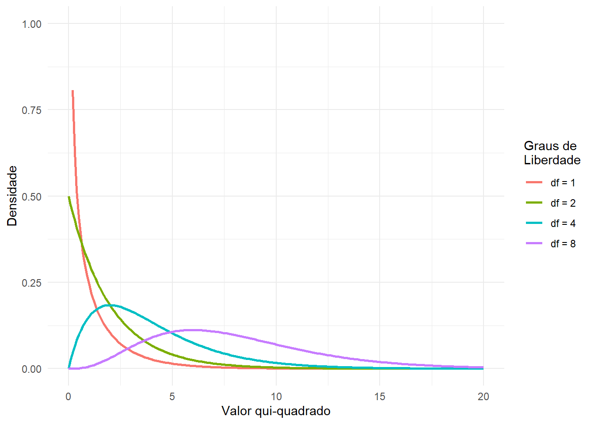

Até agora, discutimos os conceitos gerais de modelagem estatística e teste de hipóteses, e os aplicamos a algumas análises simples; agora vamos nos voltar para a questão de como modelar tipos particulares de relações em nossos dados. Neste capítulo, focaremos na modelagem de relações categóricas, com o que queremos dizer relações entre variáveis que são medidas qualitativamente. Esses dados geralmente são expressos em termos de contagens; ou seja, para cada valor da variável (ou combinação de valores de múltiplas variáveis), quantas observações assumem esse valor? Por exemplo, quando contamos quantas pessoas de cada curso estão em nossa turma, estamos ajustando um modelo categórico aos dados.
19.1 Objetivos de Aprendizagem
Descrever o conceito de uma tabela de contingência para dados categóricos.
Descrever o conceito do teste qui-quadrado para associação e calculá-lo para uma determinada tabela de contingência.
Descrever o paradoxo de Simpson e por que ele é importante para a análise de dados categóricos.
19.2 Exemplo: Cores de Balas
Digamos que comprei um saco de 100 balas, que são rotuladas como tendo 1/3 de chocolates, 1/3 de alcaçuz e 1/3 de chicletes. Quando conto as balas no saco, obtemos os seguintes números: 30 chocolates, 33 alcaçuz e 37 chicletes. Como gosto muito mais de chocolate do que de alcaçuz ou chicletes, me sinto um pouco enganado e gostaria de saber se isso foi apenas um acidente aleatório. Para responder a essa pergunta, preciso saber: Qual é a probabilidade de que a contagem saia dessa forma se a verdadeira probabilidade de cada tipo de bala for a proporção média de 1/3 cada?
Code
```{r}#| label: tbl-candy-obs#| tbl-cap: "Contagens observadas de balas"# Dados das balascandy_data <-data.frame(tipo_bala =c("Chocolate", "Alcaçuz", "Chiclete"),contagem =c(30, 33, 37))library(knitr)kable(candy_data, col.names =c("Tipo de Bala", "Contagem"))```
Tab. 19.1 Contagens observadas de balas
Tipo de Bala
Contagem
Chocolate
30
Alcaçuz
33
Chiclete
37
19.3 Teste Qui-Quadrado de Pearson
O teste qui-quadrado de Pearson nos fornece uma maneira de testar se um conjunto de contagens observadas difere de alguns valores esperados específicos que definem a hipótese nula:
No caso do nosso exemplo das balas, a hipótese nula é que a proporção de cada tipo de bala é igual. Para calcular a estatística qui-quadrado, primeiro precisamos chegar às nossas contagens esperadas sob a hipótese nula: já que a nula é que elas são todas iguais, então isso é apenas a contagem total dividida pelas três categorias (conforme mostrado na tab. 19.2). Em seguida, pegamos a diferença entre cada contagem e sua expectativa sob a hipótese nula, as elevamos ao quadrado, dividimos pela expectativa nula e as somamos para obter a estatística qui-quadrado.
Code
```{r}#| label: tbl-candy-chi2#| tbl-cap: "Contagens observadas, expectativas sob a hipótese nula e diferenças ao quadrado nos dados das balas"# Cálculo do qui-quadradon_total <-sum(candy_data$contagem)expectativa_nula <- n_total /3candy_analysis <- candy_data |> dplyr::mutate(expectativa_nula = expectativa_nula,diferenca = contagem - expectativa_nula,diferenca_quadrada = diferenca^2,x2 = diferenca_quadrada / expectativa_nula )kable(candy_analysis, col.names =c("Tipo de Bala", "Contagem", "Expectativa Nula","Diferença", "Diferença²", "X²"),digits =2)# Estatística qui-quadradochi2_stat <-sum(candy_analysis$x2)cat("\n")cat("\n X² Total = ", chi2_stat)```
X² Total = 0.74
Tab. 19.2 Contagens observadas, expectativas sob a hipótese nula e diferenças ao quadrado nos dados das balas
Tipo de Bala
Contagem
Expectativa Nula
Diferença
Diferença²
X²
Chocolate
30
33.33
-3.33
11.11
0.33
Alcaçuz
33
33.33
-0.33
0.11
0.00
Chiclete
37
33.33
3.67
13.44
0.40
A estatística qui-quadrado para esta análise resulta em 0.74, que por si só não é interpretável, pois depende do número de valores diferentes que foram somados.
No entanto, podemos aproveitar o fato de que a estatística qui-quadrado é distribuída de acordo com uma distribuição específica sob a hipótese nula, que é conhecida como a distribuição qui-quadrado.
Esta distribuição é definida como a soma dos quadrados de um conjunto de variáveis aleatórias normais padrão.
Ela tem um número de graus de liberdade igual ao número de variáveis sendo somadas.
A forma da distribuição depende do número de graus de liberdade.
Code
```{r}#| label: fig-chi2-dist#| fig-cap: "Exemplos da distribuição qui-quadrado para vários graus de liberdade"library(ggplot2)library(tidyverse)# Criar dados para várias distribuições qui-quadradox <-seq(0, 20, by =0.1)df_values <-c(1, 2, 4, 8)chi2_data <-expand.grid(x = x, df = df_values) |>mutate(densidade =dchisq(x, df),df =factor(df, labels =paste("df =", df_values)))ggplot(chi2_data, aes(x = x, y = densidade, color = df)) +geom_line(linewidth =1) +labs(x ="Valor qui-quadrado", y ="Densidade",color ="Graus de\nLiberdade") +scale_y_continuous(limits =c(0, 1), ) +theme_minimal()```

Fig. 19.1 Exemplos da distribuição qui-quadrado para vários graus de liberdade
Para o exemplo das balas, podemos calcular a probabilidade do nosso valor qui-quadrado observado de 0.74 sob a hipótese nula de frequência igual em todas as balas.
Usamos uma distribuição qui-quadrado com graus de liberdade igual a k - 1 (onde k = número de categorias) já que perdemos um grau de liberdade quando calculamos a média para gerar os valores esperados.
Code
```{r}# Teste qui-quadrado para as balasgl <-length(candy_data$tipo_bala) -1p_valor <-pchisq(chi2_stat, df = gl, lower.tail =FALSE)cat("Estatística qui-quadrado:", round(chi2_stat, 2), "\n")cat("Graus de liberdade:", gl, "\n")cat("Valor-p:", round(p_valor, 3), "\n")# Usando a função chisq.testteste_chi2 <-chisq.test(candy_data$contagem)print(teste_chi2)```
Estatística qui-quadrado: 0.74
Graus de liberdade: 2
Valor-p: 0.691
Chi-squared test for given probabilities
data: candy_data$contagem
X-squared = 0.74, df = 2, p-value = 0.6907
O valor-p resultante (P(Qui-quadrado) > 0.74 = 0.691) mostra que as contagens observadas de balas não são particularmente surpreendentes com base nas proporções impressas no saco de balas, e não rejeitaríamos a hipótese nula de proporções iguais.
19.4 Tabelas de Contingência e o Teste Bidirecional
Outra maneira de usar o teste qui-quadrado é perguntar se duas variáveis categóricas estão relacionadas entre si. Como um exemplo mais realista, tomemos a questão de se um motorista negro tem maior probabilidade de ser revistado quando é parado por um policial, em comparação com um motorista branco.
O Stanford Open Policing Project (https://openpolicing.stanford.edu/) estudou isso e fornece dados que podemos usar para analisar a questão. Usaremos os dados do Estado de Connecticut, pois são relativamente pequenos e, portanto, mais fáceis de analisar.
A maneira padrão de representar dados de uma análise categórica é através de uma tabela de contingência, que apresenta o número ou proporção de observações que se enquadram em cada combinação possível de valores para cada uma das variáveis.
Code
```{r}#| label: tbl-police-search#| tbl-cap: "Tabela de contingência para dados de revista policial"#| warning: false# Simulando dados de revista policial (baseado no exemplo)police_data <-data.frame(revistado =c(rep("NÃO", 36244), rep("SIM", 1219),rep("NÃO", 239241), rep("SIM", 3108)),raca =c(rep("Negro", 36244), rep("Negro", 1219),rep("Branco", 239241), rep("Branco", 3108)))# Criar tabela de contingênciatabela_policia <-table(police_data$revistado, police_data$raca)# Mostrar contagens absolutas e relativaskable(tabela_policia, caption ="Contagens absolutas")# Proporçõesprop_tabela <-prop.table(tabela_policia)kable(round(prop_tabela, 4), caption ="Proporções relativas")```
Tab. 19.3 Tabela de contingência para dados de revista policial
Contagens absolutas
Branco
Negro
NÃO
239241
36244
SIM
3108
1219
Proporções relativas
Branco
Negro
NÃO
0.8550
0.1295
SIM
0.0111
0.0044
O teste qui-quadrado de Pearson nos permite testar se as frequências observadas são diferentes das frequências esperadas, então precisamos determinar quais frequências esperaríamos em cada célula se as revistas e a raça não estivessem relacionadas - o que podemos definir como sendo independentes. Lembre-se do capítulo sobre probabilidade que se X e Y são independentes, então:
\[
P(X \cap Y) = P(X) \times P(Y)
\]
Ou seja, a probabilidade conjunta sob a hipótese nula de independência é simplesmente o produto das probabilidades marginais de cada variável individual. As probabilidades marginais são simplesmente as probabilidades de cada evento ocorrer independentemente de outros eventos. Podemos calcular essas probabilidades marginais e então multiplicá-las para obter as proporções esperadas sob independência.
Code
```{r}# Teste qui-quadrado para dados policiaisteste_policia <-chisq.test(tabela_policia, correct =FALSE)print(teste_policia)cat("\n")cat("Estatística qui-quadrado:", round(teste_policia$statistic, 1), "\n")cat("Graus de liberdade:", teste_policia$parameter, "\n")cat("Valor-p:", format(teste_policia$p.value, scientific =TRUE), "\n")```
Calculamos a estatística qui-quadrado, que resulta em 828.3. Para calcular um valor-p, precisamos compará-lo com a distribuição qui-quadrado nula para determinar quão extremo é nosso valor qui-quadrado comparado à nossa expectativa sob a hipótese nula. Os graus de liberdade para esta distribuição são:
Assim, para uma tabela 2×2 como esta aqui, \(gl = (2-1) \times (2-1) = 1\).
A intuição aqui é que calcular as frequências esperadas requer que usemos três valores: o número total de observações e a probabilidade marginal para cada uma das duas variáveis. Assim, uma vez que esses valores são calculados, há apenas um número que é livre para variar e, portanto, há um grau de liberdade.
Isso mostra que os dados observados seriam altamente improváveis se não houvesse realmente nenhuma relação entre raça e revistas policiais, e assim devemos rejeitar a hipótese nula de independência.
19.5 Resíduos Padronizados
Quando encontramos um efeito significativo com o teste qui-quadrado, isso nos diz que os dados são improváveis sob a hipótese nula, mas não nos diz como os dados diferem. Para obter uma visão mais profunda de como os dados diferem do que esperaríamos sob a hipótese nula, podemos examinar os resíduos do modelo, que refletem o desvio dos dados (ou seja, as frequências observadas) do modelo (ou seja, as frequências esperadas) em cada célula. Em vez de olhar para os resíduos brutos (que variam simplesmente dependendo do número de observações nos dados), é mais comum olhar para os resíduos padronizados (às vezes chamados de resíduos de Pearson), que são calculados como:
onde \(i\) e \(j\) são os índices para as linhas e colunas, respectivamente.
Code
```{r}#| label: tbl-std-residuals#| tbl-cap: "Resumo dos resíduos padronizados para dados de revista policial"# Calcular resíduos padronizados de Pearsonresiduos_pad <- teste_policia$residuals# Converter para data frame para visualizaçãoresiduos_df <-as.data.frame(as.table(residuos_pad))names(residuos_df) <-c("Revistado", "Raça", "Resíduo_Padronizado")kable(residuos_df, digits =1)```
Tab. 19.4 Resumo dos resíduos padronizados para dados de revista policial
Revistado
Raça
Resíduo_Padronizado
NÃO
Branco
1.3
SIM
Branco
-10.4
NÃO
Negro
-3.3
SIM
Negro
26.6
Esses resíduos padronizados podem ser interpretados como escores Z - neste caso, vemos que o número de revistas para indivíduos negros é substancialmente maior do que o esperado com base na independência, e o número de revistas para indivíduos brancos é substancialmente menor do que o esperado. Isso nos fornece o contexto de que precisamos para interpretar o resultado qui-quadrado significativo.
19.6 Razões de Chances (Odds Ratios)
Também podemos representar a probabilidade relativa de diferentes resultados na tabela de contingência usando a razão de chances que introduzimos anteriormente, a fim de entender melhor a magnitude do efeito. Primeiro, representamos as chances de ser revistado para cada raça, depois calculamos sua razão:
```{r}# Calcular razão de chances (odds ratio)odds_negro <- tabela_policia["SIM", "Negro"] / tabela_policia["NÃO", "Negro"]odds_branco <- tabela_policia["SIM", "Branco"] / tabela_policia["NÃO", "Branco"]odds_ratio <- odds_negro / odds_brancocat("Odds de revista (Negro):", round(odds_negro, 3), "\n")cat("Odds de revista (Branco):", round(odds_branco, 3), "\n")cat("Odds Ratio:", round(odds_ratio, 2), "\n")```
Odds de revista (Negro): 0.034
Odds de revista (Branco): 0.013
Odds Ratio: 2.59
A razão de chances mostra que as chances de ser revistado são 2.59 vezes maiores para motoristas negros versus brancos, com base neste conjunto de dados.
19.7 Fator de Bayes
Discutimos fatores de Bayes em capítulo anterior sobre estatística bayesiana - você pode se lembrar de que representa a razão da verossimilhança dos dadossobcada uma das duas hipóteses:
Podemos calcular o fator de Bayes para os dados de revista policial usando nosso software estatístico:
Code
```{r}#| warning: false#| message: false# Calcular fator de Bayes (requer pacote BayesFactor)if(require(BayesFactor)) { bf_policia <-contingencyTableBF(tabela_policia, sampleType ="indepMulti", fixedMargin ="rows")print(bf_policia)} else {cat("Pacote BayesFactor não instalado.\n")cat("O fator de Bayes é extremamente grande (> 10^100),\n")cat("indicando evidência muito forte a favor da hipótese alternativa.\n")}```
Isso mostra que a evidência a favor de uma relação entre raça do motorista e revistas policiais neste conjunto de dados é extremamente forte - um fator de Bayes muito grande é o mais próximo que podemos imaginar de infinito em estatística.
19.8 Análise Categórica Além da Tabela 2×2
A análise categórica também pode ser aplicada a tabelas de contingência onde há mais de duas categorias para cada variável.
Por exemplo, vamos olhar para os dados NHANES e comparar a variável Depressed (Deprimido) que denota o “número autorrelatado de dias em que o participante se sentiu para baixo, deprimido ou sem esperança”. Esta variável é codificada como Nenhum, Vários ou Maioria. Vamos testar se esta variável está relacionada à variável SleepTrouble (Problema de Sono) que denota se o indivíduo relatou problemas de sono a um médico.
Code
```{r}#| label: tbl-nhanes-depression#| tbl-cap: "Relação entre depressão e problemas de sono no conjunto de dados NHANES"#| warning: false# Simulando dados NHANES (baseado no exemplo)nhanes_data <-data.frame(Deprimido =c(rep("Nenhum", 2614), rep("Vários", 418), rep("Maioria", 138),rep("Nenhum", 676), rep("Vários", 249), rep("Maioria", 145)),ProblemasSono =c(rep("Não", 2614), rep("Não", 418), rep("Não", 138),rep("Sim", 676), rep("Sim", 249), rep("Sim", 145)))# Criar tabela de contingênciatabela_nhanes <-table(nhanes_data$Deprimido, nhanes_data$ProblemasSono)kable(tabela_nhanes)# Teste qui-quadradoteste_nhanes <-chisq.test(tabela_nhanes)print(teste_nhanes)```
Tab. 19.5 Relação entre depressão e problemas de sono no conjunto de dados NHANES
Não
Sim
Maioria
138
145
Nenhum
2614
676
Vários
418
249
Simplesmente olhando para esses dados, podemos dizer que é provável que haja uma relação entre as duas variáveis; notavelmente, enquanto o número total de pessoas com problemas de sono é muito menor do que aqueles sem, para pessoas que relatam estar deprimidas na maioria dos dias, o número com problemas de sono é maior do que aqueles sem.
Este teste mostra que há uma significativa relação entre depressão e problemas de sono.
Também podemos calcular o fator de Bayes para quantificar a força da evidência a favor da hipótese alternativa:
Code
```{r}#| warning: false#| message: false# Fator de Bayes para dados NHANESif(require(BayesFactor)) { bf_nhanes <-contingencyTableBF(tabela_nhanes, sampleType ="jointMulti")print(bf_nhanes)} else {cat("Pacote BayesFactor não instalado.\n")cat("O fator de Bayes é extremamente grande,\n")cat("mostrando evidência muito forte de relação entre depressão e problemas de sono.\n")}```
Aqui vemos que o fator de Bayes é muito grande, mostrando que a evidência a favor de uma relação entre depressão e problemas de sono é muito forte.
19.9 Cuidado com o Paradoxo de Simpson
As tabelas de contingência apresentadas acima representam resumos de grandes números de observações, mas resumos às vezes podem ser enganosos. Vamos pegar um exemplo do beisebol. A tabela abaixo mostra os dados de rebatidas (acertos/rebatidas e média de rebatidas) para Derek Jeter e David Justice nos anos de 1995-1997:
Code
```{r}#| label: tbl-baseball#| tbl-cap: "Paradoxo de Simpson: Dados de rebatidas de beisebol"baseball_data <-data.frame(Jogador =c("Derek Jeter", "David Justice"),`1995`=c("12/48 (.250)", "104/411 (.253)"),`1996`=c("183/582 (.314)", "45/140 (.321)"),`1997`=c("190/654 (.291)", "163/495 (.329)"),Combinado =c("385/1284 (.300)", "312/1046 (.298)"))kable(baseball_data, col.names =c("Jogador", "1995", "1996", "1997", "Combinado"))```
Tab. 19.6 Paradoxo de Simpson: Dados de rebatidas de beisebol
Jogador
1995
1996
1997
Combinado
Derek Jeter
12/48 (.250)
183/582 (.314)
190/654 (.291)
385/1284 (.300)
David Justice
104/411 (.253)
45/140 (.321)
163/495 (.329)
312/1046 (.298)
Se você olhar atentamente, verá que algo estranho está acontecendo: Em cada ano individual, Justice teve uma média de rebatidas maior que Jeter, mas quando combinamos os dados de todos os três anos, a média de Jeter é na verdade maior que a de Justice! Este é um exemplo de um fenômeno conhecido como paradoxo de Simpson, no qual um padrão que está presente em um conjunto de dados combinado pode não estar presente em nenhum dos subconjuntos dos dados.
Isso ocorre quando há outra variável que pode estar mudando entre os diferentes subconjuntos - neste caso, o número de rebatidas varia entre os anos, com Justice rebatendo muito mais vezes em 1995 (quando as médias de rebatidas eram baixas). Referimo-nos a isso como uma variável oculta (lurking variable), e é sempre importante estar atento a tais variáveis sempre que se examinam dados categóricos.